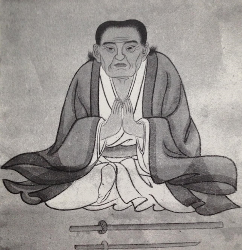

Itō Ittōsai

Itō Ittōsai (1560–1653), a descendant of the Kamakura family, was a swordsman from Izu Ōshima. When he was fourteen years old, Ittōsai fought and won against a kendo master named Tomita Ippō. After this victory, he was awarded a sword forged by swordsmith Ichimonji of Bizen province. During his stay at a priest’s house, Ittōsai was ambushed by Tomita’s students. Ittōsai defeated all of the attackers, killing the last enemy by slicing through both the attacker and the pot he was hiding behind. Therefore, his sword was named “Ichimonji’s pot-splitting sword” (Kamewari Ichimonji). Ittōsai practiced musha shugyō, training under different masters from various parts of Japan. He went around the country with a banner reading, “The best in Japan, Supreme expert of kenjutsu, Itō Ittōsai” which he used as a way to attract good teachers.
Ittōsai is known for his establishment of the Ittō-ryū school. Ittōsai is also known for winning 33 duels in his life. Unlike other prominent swordsmen such as Yagyū Munenori and Miyamoto Musashi, Ittōsai never sought religious enlightenment, prestige, or employment. Instead, he strictly strove to improve his swordsmanship.